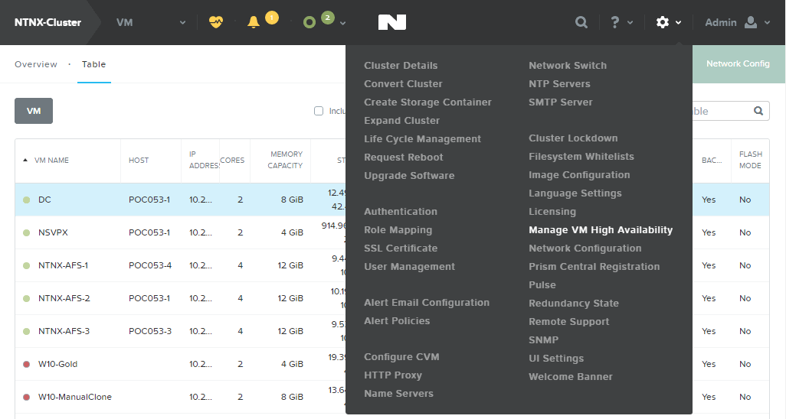
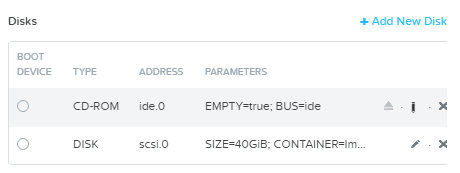

-
- What Is Calm
- Selling Calm
Nutanix Calm
Nutanix Calm Lab
Appendix
Here is where we provide a high level description of what the user will be doing during this module. We want to frame why this content is relevant to an SE/Services Consultant and what we expect them to understand after completing the lab.
Notes provide easily noticable interjections to lab instructions. Reasons to use a note include calling attention to a step that requires additional context or referencing external resources. Make sure to include a return before and after the note directive for it to render properly. Please don’t abuse notes.
Note
Check out this cheat sheet for helpful documentation on formatting text, links, tables, etc. in Restructured Text.
The Prism UI includes several unlabeled icons. When directing a user to one of these actions or menus, use the example inline markup below:
In Prism, click > Manage VM High Availability.

Under Disks, select to change the CD-ROM device configuration.

Click to unmount the disk image from the CD-ROM device.
It is not necessary to include inline icons when the are accompanied by a label/text in the UI, such as Delete
You can insert code into your lab guides both inline and via external files. Inline is a great option for providing command line instructions or display shorter code snippets.
Note
Here is a reference for even more code options available in Sphinx, including emphasizing individual lines.
Using an SSH client, execute the following:
> ssh nutanix@<NUTANIX-CLUSTER-IP>
> acli
<acropolis> vm.create XD num_vcpus=4 num_cores_per_vcpu=1 memory=8G
<acropolis> vm.disk_create XD cdrom=true empty=true
<acropolis> vm.disk_create XD clone_from_image=<Windows 2012 Disk Image Name>
<acropolis> vm.nic_create XD network=<Network Name> ip=<XD IP Address>
<acropolis> vm.on XD
Note
When using acli, you can use the Tab key to autocomplete fields. Pressing Tab twice lists available namespaces and values.
The name/caption arguments are optional, and should only be used is you need to reference the code from another part of the document, like this: INLINE CODE EXAMPLE
Use the literalinclude directive to create a code block from an external file. The best option when dealing with longer scripts or the content of the script is maintained separate from the lab guide.
1 2 3 4 5 6 7 8 9 10 11 12 13 14 15 16 17 18 | import requests
import re
# get url
url = input('Enter a URL (include `http://`): ')
# connect to the url
website = requests.get(url)
# read html
html = website.text
# use re.findall to grab all the links
links = re.findall('"((http|ftp)s?://.*?)"', html)
# output links
for link in links:
print(link[0])
|
Note
For proper color markup, specify the language of your code using one of the supported lexers found at pygments.org.
Here is a link to a Another Term in the Glossary. This approach doesn’t require labels in your .rst files, but requires you to know the name of the file and anchor to which you are linking.
Here is a link to an external site.
You can also link directly to labels in your .rst files using the ref directive. This approach will automatically expand the name of the heading to which the label is applied. Here is an example of linking to Example Lab 1.